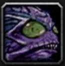

Savory Deviate Delight

Description
Somebody stole a recipe from a pirate named Stinkbraid, and strange things started happening to those who made
the delicious dish. When you try Savory Deviate Delight, beware of flipping out. Or turning into a pirate.
Ingredients
- Vegetable oil for frying
- 3 tilapia fillets, cut in half
- Pinch each salt and pepper
- 2 cups yellow corn
- 1/2 cup red bell pepper, diced
- Splash white wine vinegar
- 6 small flour tortillas
- 1/2 cup tartar sauce
- About 1 cup red cabbage, finely shredded
Batter
- 1 1/2 cups flour
- 1/4 cup cornstarch
- 1 1/2 cups buttermilk
- Pinch each salt and cayenne pepper
Steps
- Pour about an inch of oil into a small frying pan
and begin heating over medium heat, to about 300°F.
Combine all the ingredients for the batter in a small
mixing bowl, whisking together until you have a thick,
smooth mixture. Pat dry the fish filets, and dip into the
batter, then gently lower into the hot oil. Let strips of
battered fish cook for a minute or two on each side until
a nice golden color, then remove to a plate lined with
paper towel to drain.
- In a separate pan, add a dash of oil, then roast the
corn and red pepper for a few minutes until they begin
to brown, then add the splash of vinegar. Stir for another
30 seconds, and remove from heat. Sprinkle with salt and
pepper.
- To put together the tacos, spread a dollop of tartar
sauce down the middle of a tortilla. Lay one piece of
fried fish over that, then top with the corn mixture and
cabbage. Serve immediately.
Go Back